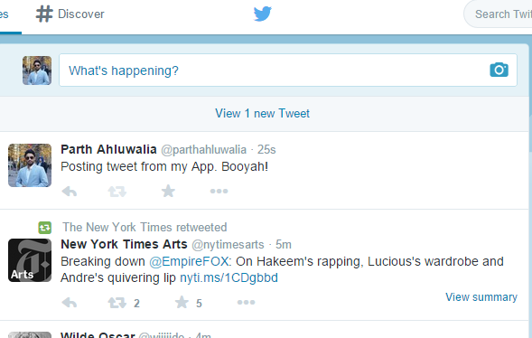

Posting a Tweet From the App
Post Tweet
The text field and the button have been purposely disabled, as the app currently uses Developer's Twitter account to post a tweet.
Upon Posting a tweet "Posting a tweet from my App. Booyah!", it will be displayed on the Twitter timeline...
